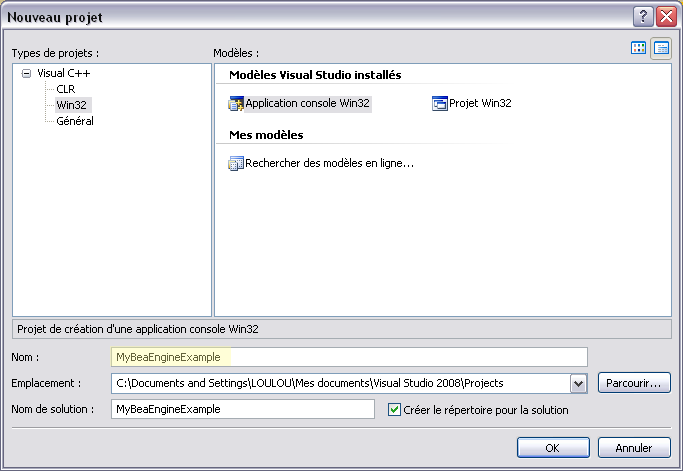
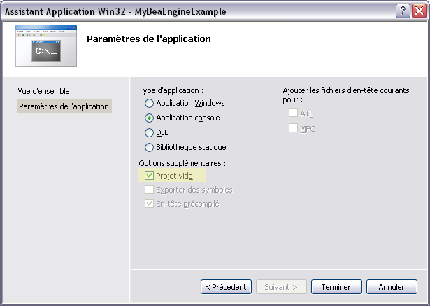
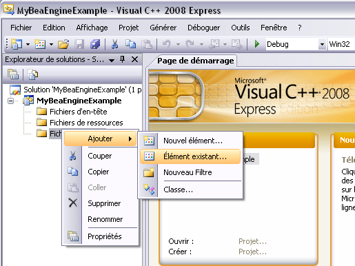
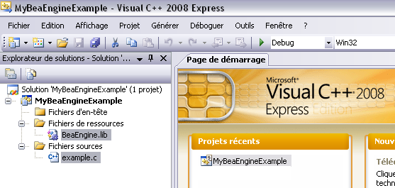
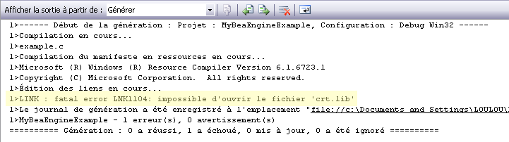
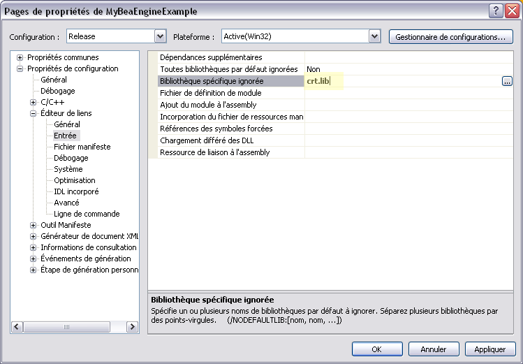
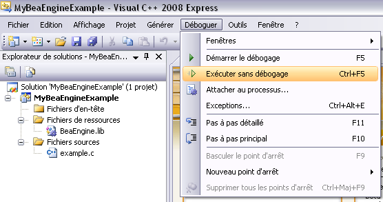

Compile an example using Visual Studio 2008
I explain here how to compile (thanks to Visual Studio 2008 Express Edition) an example using BeaEngine. This explanation comes from a fructuous exchange with Bruce. thanks to him for the report.
1. Create a new project
Start by creating a new project : File, New, Project. You obtain something like this (surely not in french) :

Enter the project name and choose a Win32 console application.
2. Assistant Application
You obtain the window "Assistant Application" like the following. Choose "Empty project".

3. Add the source File
In the window on the left called "Explorer solutions", you can see your new project. right click on "Sources Files" and choose to Add an existing element. Choose a source file proposed in the examples package of BeaEngine.

4. Add the library BeaEngine
Now, add the file BeaEngine.lib in the same way than the source file using "Resources files".

5. Try to compile
If you try to build this example by selecting : Build, Build application, you will receive a log message with the following error :

6. Add crt.lib
To fix this error, you just have to add the library crt.lib to the project. Select : Project, properties. You will see the following window. In the item "links editor", "Entry", modify the entry called "ignored specific library" en enter crt.lib

7. Compile !
Try once more time to build the project, it should be ok now. Then, you can launch the new generated executable :
